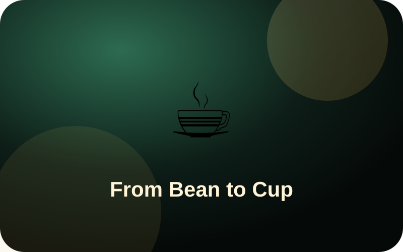
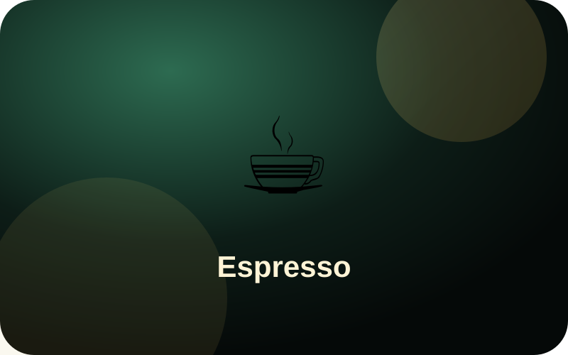
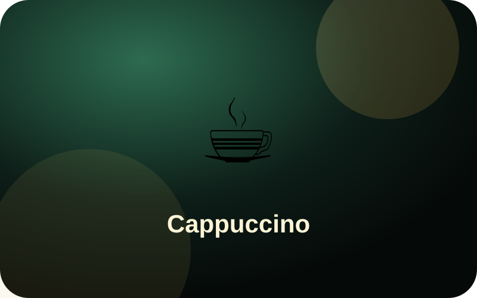
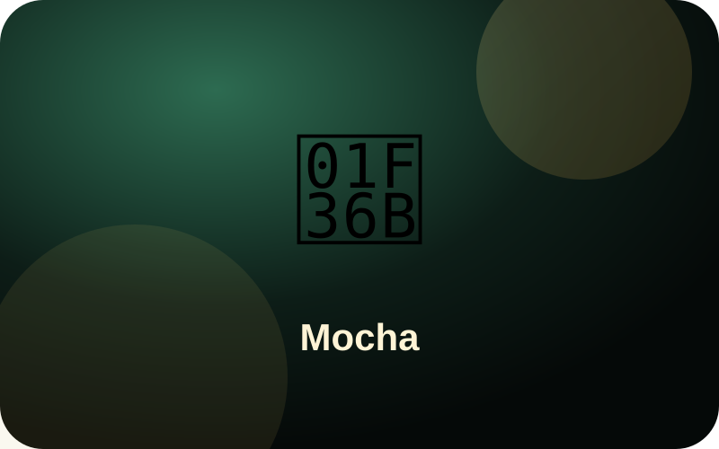
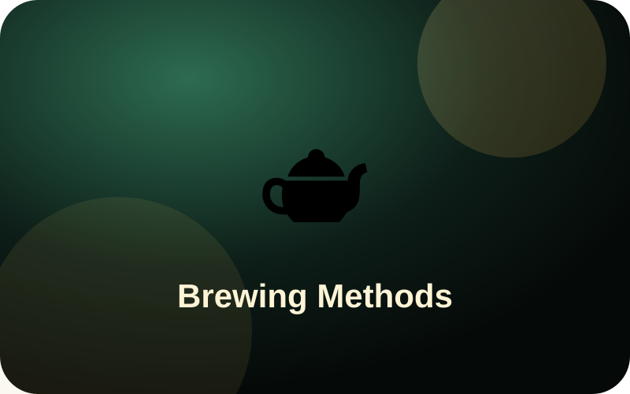

Besplatan espresso
Učlanite se u Langar Club i primite jednokratnu digitalnu karticu za espresso.
Kava • Focaccia Pizza • Tacosi • Quesadille • Deserti • Dostava
Skenirajte ovaj QR s pakiranja ili ekrana, otvorite aplikaciju i registrirajte se u Langar Club za digitalnu karticu besplatnog espressa.
Učlanite se u Langar Club i primite jednokratnu digitalnu karticu za espresso.
Prijatelj se registrira, naruči online i plati; vi dobivate €0.50 Langar Credit.
Na rođendan dobivate 40% popusta za sebe i 20% za do 3 prijatelja.
Odaberite kategoriju. Svaka kategorija otvara vlastitu stranicu s artiklima, detaljima i navigacijom naprijed/natrag.
Cijene uključuju PDV gdje je primjenjivo. Molimo informirajte osoblje o alergijama prije naručivanja.
Odaberite narudžbu za stol, pick-up ili delivery, zatim kategoriju.
Za narudžbu u kafiću nije potrebna registracija. Dovoljan je broj stola.
Registrirajte se, spremite profil u Cloud, primite espresso karticu, QR i skupljajte Langar Credit.
Vaš kredit, kartice i povijest.
Nagrada se aktivira tek kada novi član prvi put naruči online, plati i narudžba bude završena.
Odaberite datum i slobodan zeleni termin. Crveni termini su već rezervirani i ne mogu se odabrati.
Album za buduće fotografije proizvoda, prostora i eventa.
Prijavite interes za Coffee Talk, Taco Night, degustacije i radionice. Nakon prijave, potvrda ide u vaš Inbox.
Postavite pitanje o kavi, mlijeku, vodi, omjerima, kalorijama, kofeinu, smoothiejima, mocktailima i načinu posluživanja.
Sign in to see your question history.
Putovanje od zrna do šalice: povijest, kultura, espresso napitci, mlijeko, pjena i kvaliteta.

Kava je globalna priča: od šuma Etiopije, preko Jemena i arapskih kavana, do europskih trgovačkih centara i talijanskih espresso barova. U jednoj šalici susreću se poljoprivreda, trgovina, znanost, kultura, miris, okus i vještina bariste.
Najpoznatija priča govori o pastiru Kaldiju iz Etiopije, koji je primijetio da su njegove koze življe nakon što pojedu crvene plodove biljke kave. Ta je priča više legenda nego dokazani dokument, ali dobro pokazuje kako je čovjek prepoznao energiju skrivenu u plodu kave.
Povijesno je važno da je biljka kave prirodno rasla u Etiopiji, a zatim je preko Crvenog mora stigla u Jemen. U Jemenu se kava počela sustavnije uzgajati, pržiti i pripremati kao napitak. Luka Mocha postala je važna točka trgovine kavom; zato riječ mocha danas nosi i povijesno značenje.

2. Espresso: pritisak, brzina i cremaEspresso nije vrsta zrna. Espresso je metoda ekstrakcije: vruća voda pod pritiskom prolazi kroz fino mljevenu i zbijenu kavu. Rezultat je kratak, koncentriran napitak s intenzivnom aromom, tijelom i cremą na površini.
Espresso se razvio iz potrebe za bržom pripremom kave u urbanom životu Italije krajem 19. i početkom 20. stoljeća. Moderna espresso kultura stvorila je talijanski bar: kratka kava, brzo posluživanje, precizna oprema i vještina bariste.

3. Cappuccino i zašto pjena nije samo ukrasCappuccino je napitak od espressa, zagrijanog mlijeka i mliječne pjene. Ime se povezuje s kapucinima, jer je boja kombinacije kave i mlijeka podsjećala na smeđu odjeću tih redovnika.
Pjena nije samo dekoracija. Dobra mikropjena omekšava teksturu, nosi aromu, pojačava prirodnu slatkoću mlijeka i stvara ravnotežu između gorčine espressa i kremoznosti mlijeka. Cappuccino ne smije biti samo vruće mlijeko s malo kave; mora imati ravnotežu kave, mlijeka i pjene.
 4. Latte, Flat White i Macchiato
4. Latte, Flat White i MacchiatoLatte znači kava s mlijekom. U odnosu na cappuccino ima više mlijeka i manje pjene, pa je okus nježniji i kremastiji. Flat White je manji i više naglašava espresso, s tankom, svilenkastom pjenom. Macchiato znači obilježeni espresso: espresso s malom količinom mlijeka ili pjene.
Za mliječne napitke nije dovoljna samo dobra kava. Važni su temperatura mlijeka, finoća mikropjene, sjaj i način ulijevanja. Zato ista zrna mogu dati sasvim drugačiji doživljaj u espressu, cappuccinu i latteu.

5. Mocha, Affogato i slatke kaveMocha ima dva značenja: povijesno je Mocha bila poznata jemenska luka, a u modernom meniju mocha je napitak od espressa, mlijeka i čokolade. Dobra mocha ne smije sakriti kavu; čokolada treba podržati njezinu aromu.
Affogato je talijanski spoj kave i deserta: vrući espresso prelijeva se preko sladoleda ili gelata. Kontrast vrućeg i hladnog, gorkog i slatkog, čini ga jednostavnim, ali elegantnim doživljajem.

6. Turska kava, Arabic coffee i metode pripremeTurska kava nije vrsta zrna nego metoda pripreme: vrlo fino mljevena kava kuha se u vodi, obično u džezvi, i ne filtrira se. Arabic coffee često se priprema s kardamomom i poslužuje u malim šalicama, često uz datulje, kao znak gostoprimstva.
Brew metode poput V60, Chemexa, French Pressa, Aeropressa i Cold Brewa pokazuju koliko voda, mljevenje, vrijeme i filter mijenjaju okus. Espresso je pritisak i koncentracija; filter kava je jasnoća i nijansa; cold brew je sporija, hladna ekstrakcija s manje oštre gorčine.
Profesionalno kušanje počinje mirisom. Zatim tražimo kiselost, prirodnu slatkoću, tijelo i završetak. Dobra kava ne mora biti najgorča; dobra kava je uravnotežena, čista, aromatična i ostavlja želju za još jednim gutljajem.
Voda uz kavu čisti nepce prije kušanja. Slatki dodaci poput čokolade, datulja ili kolača mogu stvoriti ravnotežu, ali ako želimo razumjeti samu kavu, najprije je kušamo bez dodataka.
Kratko, jasno i korisno za goste koji žele razumjeti što naručuju.
Espresso je kratak i koncentriran. Americano je espresso s dodatkom vode, pa je veći, lakši i manje intenzivan, ali i dalje zadržava espresso karakter.
Cappuccino naglašava ravnotežu kave, mlijeka i pjene. Latte ima više mlijeka, blaži okus i tanji sloj pjene.
Flat White je obično manji, svilenkastiji i više naglašava espresso. Latte je mliječniji i mekši.
Turska kava kuha se u vodi i ne filtrira se; espresso nastaje pod pritiskom, a talog ostaje u portafilteru.
Cold Brew se ekstrahira hladnom vodom kroz dugo vrijeme. Iced Coffee je najčešće vruće pripremljena kava poslužena hladna s ledom.
Mocha dodaje čokoladnu notu espressu i mlijeku. Latte ostaje čistiji, mliječniji espresso napitak.
Male kartice znanja za goste — brzo, zanimljivo i stručno.
Espresso nije vrsta zrna, nego metoda brze ekstrakcije pod pritiskom.
Zrno kave je sjemenka ploda koji zovemo coffee cherry.
Priča o Kaldiju i kozama poznata je legenda, ne siguran povijesni dokument.
Luka Mocha u Jemenu bila je važna za ranu trgovinu kavom.
Mocha danas često znači espresso, mlijeko i čokolada, ali ime ima povijesni korijen.
Cappuccino treba ravnotežu espressa, mlijeka i pjene.
Mikropjena nije dekoracija; ona mijenja teksturu, aromu i osjećaj slatkoće.
Latte ima više mlijeka i manje pjene od cappuccina.
Flat White je obično manji i više “coffee-forward” od lattea.
Macchiato znači “obilježen”: espresso s malo mlijeka ili pjene.
Voda uz kavu čisti nepce prije kušanja.
Affogato je desert-kava: vrući espresso preko sladoleda.
Cold brew nije isto što i ledena kava; ekstrakcija počinje hladnom vodom.
Limun uz espresso nije univerzalno talijansko pravilo, nego stil posluživanja u nekim mjestima.
Arabica je često aromatičnija; Robusta ima više kofeina i jače tijelo.
Tamno prženje ne znači automatski bolju kavu.
Mljevenje može promijeniti kavu iz kisele u gorku.
Vrijeme ekstrakcije utječe na slatkoću, gorčinu i tijelo napitka.
Turska kava se ne filtrira; talog ostaje u šalici.
Arabic coffee se često poslužuje s kardamomom i datuljama.
Dobra kava može imati prirodnu slatkoću bez šećera.
Kiselost u specialty kavi može podsjećati na citrus, bobice ili jabuku.
Specialty coffee kontrolira put od farme do šalice.
Crema je važna, ali nije jedini dokaz dobrog espressa.
Americano je espresso razrijeđen vodom, nije isto što i filter kava.
V60 nagrađuje preciznost: voda, temperatura, mljevenje i vrijeme.
French Press čuva više ulja kave jer nema papirnati filter.
AeroPress omogućuje mnogo recepata i stilova ekstrakcije.
Chemex daje vrlo čist i lagan profil zbog debljeg filtera.
Espresso kultura nastala je iz brzine i ritma talijanskog urbanog života.
Kava u Hrvatskoj i na Balkanu često je društveni ritual, ne samo napitak.
Dobra kava nije nužno najjača; dobra kava je uravnotežena.
Privatne edukacije za bariste, konobare i goste koji žele razumjeti kvalitetnu kavu.
Espresso, mljevenje, mliječna pjena, cappuccino, latte i čišćenje opreme.
Profesionalna komunikacija, primanje narudžbe, servis, higijena i rad s gostima.
Kratke radionice za goste: porijeklo kave, kvaliteta, okusi i priprema.
Ako želite suradnju ili buduću poslovnicu, ispunite obrazac. Cijene i uvjeti šalju se samo nakon pregleda prijave.
Kako bismo zadržali svježinu i kvalitetu, sushi se rezervira najmanje jedan dan ranije. Tako vidimo koje vrste gosti najviše žele prije nego ih uvedemo dnevno.
Zabranjena je prodaja i posluživanje alkoholnih pića osobama mlađima od 18 godina.
Račun / ReceiptAko vam nije izdan fiskalizirani račun, niste obvezni platiti. Molimo zatražite svoj račun za svaku narudžbu.